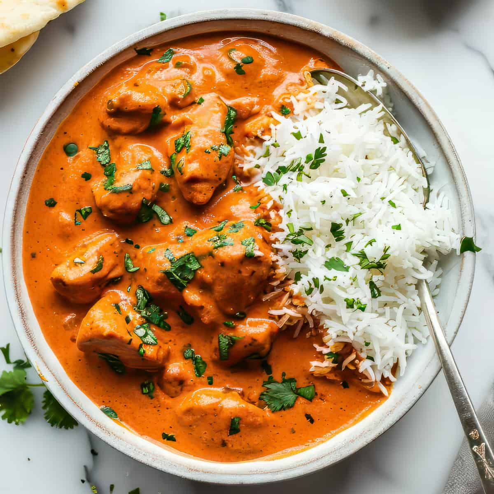

Biryani

Biryani is a fragrant rice dish cooked with a blend of spices, marinated meat, and sometimes vegetables. Originating from Mughal kitchens, this dish is a beloved staple across India, with regional varieties like Hyderabadi, Lucknowi, and Kolkata Biryani.
Butter Chicken
Butter Chicken, or Murgh Makhani, is a creamy and flavorful curry made with tender pieces of chicken cooked in a rich tomato-based sauce. Best enjoyed with naan or steamed rice, it is a globally recognized dish that represents North Indian cuisine.
Masala Dosa

Masala Dosa is a popular South Indian dish made from a fermented rice and lentil batter, filled with a spiced potato mixture. Crispy on the outside and soft on the inside, it is served with coconut chutney and sambhar, a tangy lentil soup.
Gulab Jamun

Gulab Jamun is a classic Indian dessert made from milk solids, deep-fried to golden perfection, and soaked in a rose-flavored sugar syrup. Its melt-in-the-mouth texture makes it a favorite during festivals and celebrations.